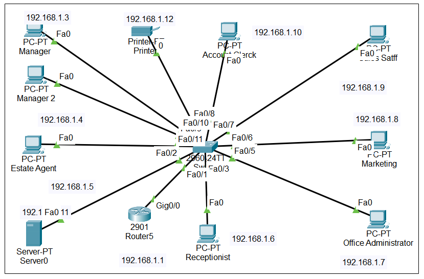

About Me
Hello! I’m Yousef Al-Aqrabi. I’m a computing student who enjoys building computer networks in Packet Tracer and developing software using Python. I like learning about many fields of technology, including programming, networking, cybersecurity, and web development. I am passionate about technology and always eager to learn new things. I have hands-on experience using Cisco Packet Tracer, where I created and simulated wired and wireless networks. I'm also studying Python and have created little programs to automate simple activities and tackle daily difficulties.
Featured Project
Network Design with Cisco Packet Tracer
For one of my course projects, I designed a fully working small office network using Cisco Packet Tracer. It included routers, switches, PCs, and used static and dynamic routing. I also documented the topology and tested end-to-end communication. I’m proud of this work because it shows my networking skills and logical thinking.
Figure: Network project by using Packet Tracer simulation .
Contact Me
Email: yousefalaqrabii@gmail.com
GitHub: github.com/yousefprofile